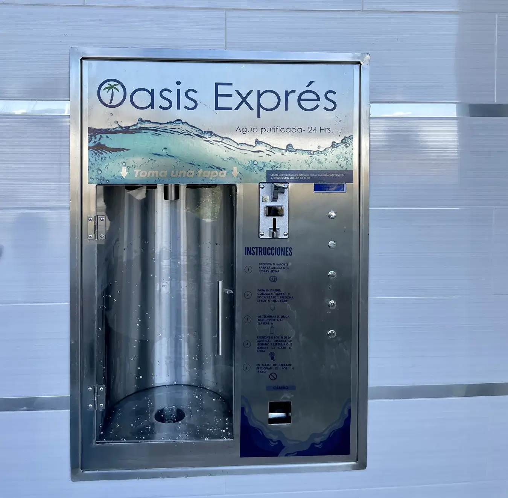
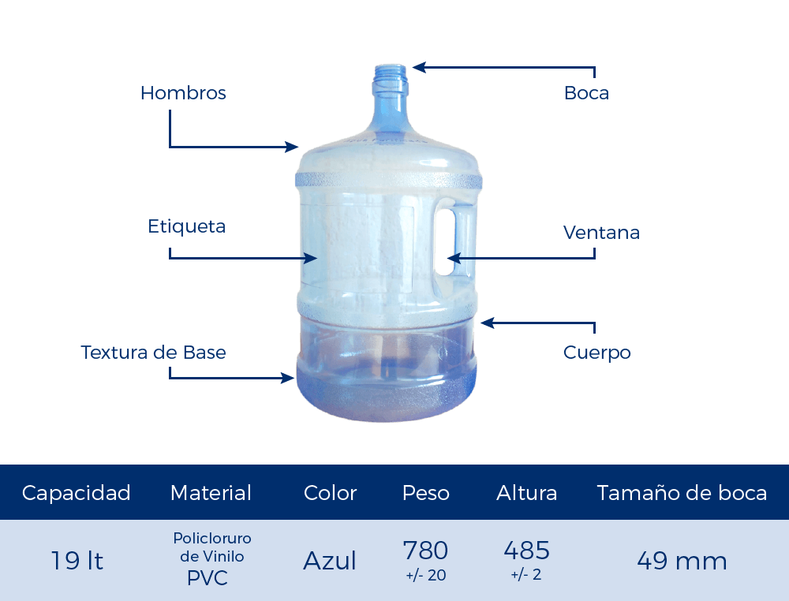

Quienes somos
Bienvenido a la Purificadora de agua Gotita, su fuente confiable para obtener agua pura y
segura en todo momento. En un mundo donde la calidad del agua es fundamental para la salud y el bienestar,
nos enorgullece ofrecer soluciones innovadoras y efectivas que garantizan la pureza del agua que usted y su
familia consumen. Nuestro compromiso con la excelencia se refleja en cada aspecto de nuestro proceso de
purificación. Desde la cuidadosa selección de los mejores materiales hasta la implementación de tecnologías
avanzadas, nos esforzamos por superar las expectativas y proporcionarle agua de la más alta calidad posible.
Ya sea para el consumo doméstico, en entornos comerciales o comunitarios, estamos aquí para brindarle la
tranquilidad que proviene de saber que su agua ha sido tratada con los más altos estándares de calidad y
seguridad. Descubra cómo nuestra dedicación a la pureza del agua puede marcar la diferencia en su vida
diaria.
Nuestro futuro
¡Estamos emocionados de presentar nuestros plan a futro. Innovadoras estaciones de autoservicio para agua
purificada! Diseñadas estratégicamente en la ciudad, estas estaciones modernas ofrecen un acceso conveniente y
seguro a agua pura de alta calidad. Nuestro compromiso con la comunidad se refleja en nuestra continua
búsqueda de soluciones que se adapten al estilo de vida de todos. Manténgase conectado para conocer más sobre
nuestras actualizaciones y únase a nosotros en nuestro compromiso con el agua saludable para todos.

Nuestros filtros
Nuestros filtros son la piedra angular de nuestra purificadora de agua, diseñados con la más alta
calidad y tecnología para garantizar que cada gota de agua que producimos sea segura y cristalina.
Utilizamos filtros de última generación que eliminan de manera efectiva impurezas, sedimentos,
químicos y contaminantes del agua, asegurando un resultado final de pureza inigualable. Estos
filtros están fabricados con materiales duraderos y resistentes, lo que garantiza su eficiencia a lo
largo del tiempo y reduce la necesidad de mantenimiento constante. Además, ofrecemos una variedad de
opciones de filtros para adaptarse a las necesidades específicas de nuestros clientes, ya sea para
uso doméstico, comercial o industrial. Confíe en nuestros filtros para proporcionarle agua
purificada de la más alta calidad, respaldada por años de experiencia y dedicación a la excelencia
en la purificación del agua. ¡Descubra la diferencia que nuestros filtros pueden hacer en su vida
diaria y únase a la creciente comunidad de clientes satisfechos que confían en nosotros para sus
necesidades de agua pura!
El garafon perfecto
Los garrafones de agua son vitales para proporcionar un suministro seguro de agua potable en hogares,
oficinas y otros lugares, garantizando la salud y el bienestar. Su función es mantener el agua limpia, segura
y accesible, beneficiando a comunidades enteras y promoviendo la salud pública.

Nuestros horarios
Nuestros horarios son flexibles, incluyendo entregas a domicilio. Estamos aquí para ti, cuando lo necesites.
Lunes a viernes de 10:00 am - 6:00 pm
Precios
Tener a nuestro clientes felices es nuestra prioridad por ese motivo tenemos los mejores precios de la zona:
Nuestro garrafon en ventanilla tiene un costo de $12 MXN
Nuestro garrafon entregado a domicilo tiene un costo de $15 MXN